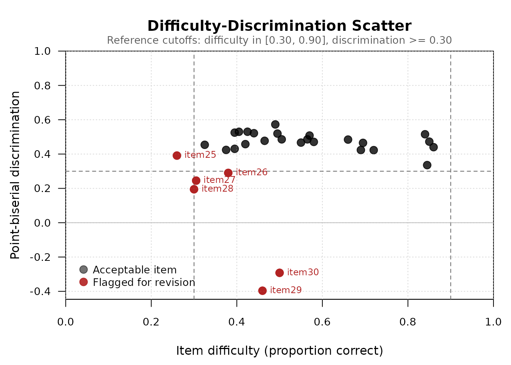

Overview
The mcqAnalysis package provides a unified toolkit
for classical test theory (CTT) item analysis of multiple-choice tests.
It computes item difficulty, item discrimination (point-biserial
correlation and upper-lower 27 percent discrimination index),
per-distractor analysis, and Haladyna’s distractor efficiency, and
packages the results into a tidy mcq_analysis object with
dedicated print, plot, and
apa_table methods.
This vignette walks through a complete item analysis using the package’s example dataset.
Installation
Install the released version from CRAN:
install.packages("mcqAnalysis")Or the development version from GitHub:
# install.packages("devtools")
devtools::install_github("Rafhq1403/mcqAnalysis")Example data
The package ships with mcq_example, a simulated
200-student, 30-item, four-option multiple-choice test. The dataset is
constructed so that items span the full range of quality: easy items,
ideal medium-difficulty items, hard items with declining discrimination,
and two deliberately badly-written items with negative
discrimination.
data(mcq_example)
str(mcq_example, max.level = 1)
#> List of 2
#> $ responses: chr [1:200, 1:30] "D" "D" "D" "D" ...
#> ..- attr(*, "dimnames")=List of 2
#> $ key : Named chr [1:30] "D" "D" "D" "A" ...
#> ..- attr(*, "names")= chr [1:30] "item01" "item02" "item03" "item04" ...
mcq_example$key[1:6]
#> item01 item02 item03 item04 item05 item06
#> "D" "D" "D" "A" "D" "B"
head(mcq_example$responses[, 1:6])
#> item01 item02 item03 item04 item05 item06
#> student001 "D" "D" "D" "A" "D" "B"
#> student002 "D" "D" "D" "A" "A" "B"
#> student003 "D" "D" "C" "A" "D" "B"
#> student004 "D" "D" "D" "A" "D" "B"
#> student005 "D" "D" "D" "A" "D" "B"
#> student006 "D" "D" "D" "A" "D" "B"Complete analysis with mcq_analysis()
The wrapper function mcq_analysis() runs every
item-level computation in a single call and returns an
mcq_analysis S3 object.
result <- mcq_analysis(mcq_example$responses, mcq_example$key)
result
#> Multiple-Choice Item Analysis
#> ------------------------------
#> Students: 200
#> Items: 30
#> Mean total score: 15.765 (SD = 6.342 )
#>
#> Item-level statistics:
#> item key difficulty point_biserial discrimination_index
#> item01 D 0.850 0.472 0.426
#> item02 D 0.860 0.440 0.370
#> item03 D 0.845 0.336 0.296
#> item04 A 0.840 0.515 0.537
#> item05 D 0.720 0.423 0.556
#> item06 B 0.695 0.465 0.593
#> item07 D 0.690 0.424 0.593
#> item08 A 0.660 0.484 0.611
#> item09 D 0.580 0.471 0.685
#> item10 C 0.565 0.486 0.722
#> item11 B 0.570 0.508 0.648
#> item12 A 0.550 0.467 0.667
#> item13 C 0.495 0.519 0.704
#> item14 B 0.505 0.486 0.741
#> item15 D 0.425 0.530 0.759
#> item16 A 0.395 0.431 0.630
#> item17 A 0.465 0.477 0.685
#> item18 D 0.420 0.458 0.704
#> item19 A 0.490 0.573 0.759
#> item20 D 0.440 0.522 0.741
#> item21 B 0.375 0.424 0.648
#> item22 B 0.325 0.454 0.611
#> item23 D 0.405 0.530 0.704
#> item24 D 0.395 0.525 0.741
#> item25 A 0.260 0.391 0.519
#> item26 C 0.380 0.290 0.389
#> item27 D 0.305 0.245 0.296
#> item28 A 0.300 0.195 0.259
#> item29 C 0.460 -0.396 -0.407
#> item30 D 0.500 -0.292 -0.296
#> distractor_efficiency
#> 2
#> 1
#> 2
#> 2
#> 3
#> 3
#> 3
#> 3
#> 3
#> 3
#> 3
#> 3
#> 3
#> 3
#> 3
#> 3
#> 3
#> 3
#> 3
#> 3
#> 3
#> 3
#> 3
#> 3
#> 3
#> 3
#> 3
#> 3
#> 1
#> 1The default print method shows test-level summaries (number of students, number of items, mean and SD of total scores) and an item-level table with difficulty, point-biserial, discrimination index, and distractor efficiency.
Visualizing item quality
The plot() method produces a difficulty-discrimination
scatter — the classical “item quality map” used for visually identifying
items that fall outside conventional adequacy cutoffs. By default, only
flagged items are labeled, keeping the plot legible when many items
cluster in the acceptable region.
plot(result)
Items in red are flagged because they violate at least one of the default adequacy criteria: difficulty outside [0.30, 0.90] or discrimination below 0.30. Items 29 and 30 have negative discrimination — high-ability students get them wrong more often than low-ability students, indicating poorly written distractors or a mis-keyed answer.
To label every item or to plot the upper-lower 27 percent discrimination index instead of the point-biserial:
Per-distractor analysis
For diagnosing specific problematic items, the
distractor_analysis() function returns a per-option
breakdown showing how each response option performed.
da <- distractor_analysis(mcq_example$responses, mcq_example$key)
head(da, 8)
#> item option is_key frequency proportion point_biserial
#> item01 item01 A FALSE 10 0.050 -0.2670906
#> item011 item01 B FALSE 12 0.060 -0.3234223
#> item012 item01 C FALSE 8 0.040 -0.2505524
#> item013 item01 D TRUE 170 0.850 0.5156325
#> item02 item02 A FALSE 10 0.050 -0.2525847
#> item021 item02 B FALSE 9 0.045 -0.2893215
#> item022 item02 C FALSE 9 0.045 -0.2550078
#> item023 item02 D TRUE 172 0.860 0.4838546For each item-option combination, the output reports the option’s selection frequency, the proportion of examinees choosing it, whether it is the key, and its point-biserial correlation with the total test score. The key should have a clearly positive point-biserial; each distractor should have a non-trivial selection proportion and a negative point-biserial.
Inspect a specific problematic item:
da[da$item == "item30", ]
#> item option is_key frequency proportion point_biserial
#> item30 item30 A FALSE 55 0.275 0.27246235
#> item301 item30 B FALSE 21 0.105 0.04108455
#> item302 item30 C FALSE 24 0.120 -0.07627404
#> item303 item30 D TRUE 100 0.500 -0.21893362Distractor efficiency
distractor_efficiency() summarizes the per-option
analysis into a single integer per item: the count of functioning
distractors. A distractor is “functioning” if it is selected by at least
5 percent of examinees and has a negative point-biserial with the total
score (Haladyna & Downing, 1993).
de <- distractor_efficiency(mcq_example$responses, mcq_example$key)
de[1:10]
#> item01 item02 item03 item04 item05 item06 item07 item08 item09 item10
#> 2 1 2 2 3 3 3 3 3 3For a four-option item, distractor efficiency ranges from 0 (no functioning distractors — the item is essentially a two-option item) to 3 (all three distractors functioning — the item is performing at full capacity).
Publication-ready output with apa_table()
The apa_table() method formats the item analysis as a
publication-ready APA-style table in data-frame, markdown, HTML, or
LaTeX form.
apa_table(result, format = "data.frame")[1:8, ]
#> Item Key Difficulty Point-biserial Discrimination D Distractor Efficiency
#> 1 item01 D 0.85 0.47 0.43 2
#> 2 item02 D 0.86 0.44 0.37 1
#> 3 item03 D 0.84 0.34 0.30 2
#> 4 item04 A 0.84 0.52 0.54 2
#> 5 item05 D 0.72 0.42 0.56 3
#> 6 item06 B 0.70 0.47 0.59 3
#> 7 item07 D 0.69 0.42 0.59 3
#> 8 item08 A 0.66 0.48 0.61 3
#> Difficulty Level Discrimination
#> 1 Moderate Excellent
#> 2 Moderate Excellent
#> 3 Moderate Good
#> 4 Moderate Excellent
#> 5 Moderate Excellent
#> 6 Moderate Excellent
#> 7 Moderate Excellent
#> 8 Moderate ExcellentThe data-frame output includes interpretive columns based on conventional CTT cutoffs (Ebel & Frisbie, 1991). For inclusion in an R Markdown manuscript:
apa_table(result, format = "markdown")Individual functions
If you do not need the full wrapper, each component statistic is available as a standalone function:
item_difficulty(mcq_example$responses, mcq_example$key)[1:6]
#> item01 item02 item03 item04 item05 item06
#> 0.850 0.860 0.845 0.840 0.720 0.695
point_biserial(mcq_example$responses, mcq_example$key)[1:6]
#> item01 item02 item03 item04 item05 item06
#> 0.4723679 0.4401658 0.3356581 0.5153377 0.4228731 0.4652371
item_discrimination(mcq_example$responses, mcq_example$key,
method = "discrimination_index")[1:6]
#> item01 item02 item03 item04 item05 item06
#> 0.4259259 0.3703704 0.2962963 0.5370370 0.5555556 0.5925926All functions share the same input convention: a matrix or data frame of student responses (students in rows, items in columns) and a vector of correct answers with one entry per item.
References
Ebel, R. L., & Frisbie, D. A. (1991). Essentials of educational measurement (5th ed.). Prentice Hall.
Haladyna, T. M. (2004). Developing and validating multiple-choice test items (3rd ed.). Lawrence Erlbaum Associates.
Haladyna, T. M., & Downing, S. M. (1993). How many options is enough for a multiple-choice test item? Educational and Psychological Measurement, 53(4), 999-1010.
Kelley, T. L. (1939). The selection of upper and lower groups for the validation of test items. Journal of Educational Psychology, 30(1), 17-24.